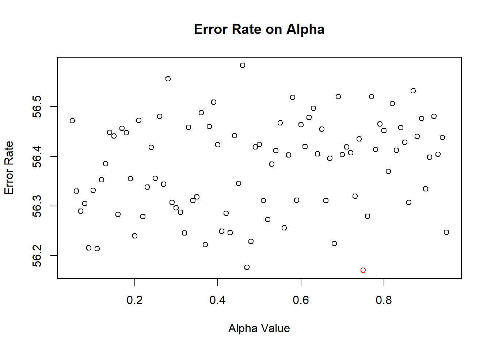
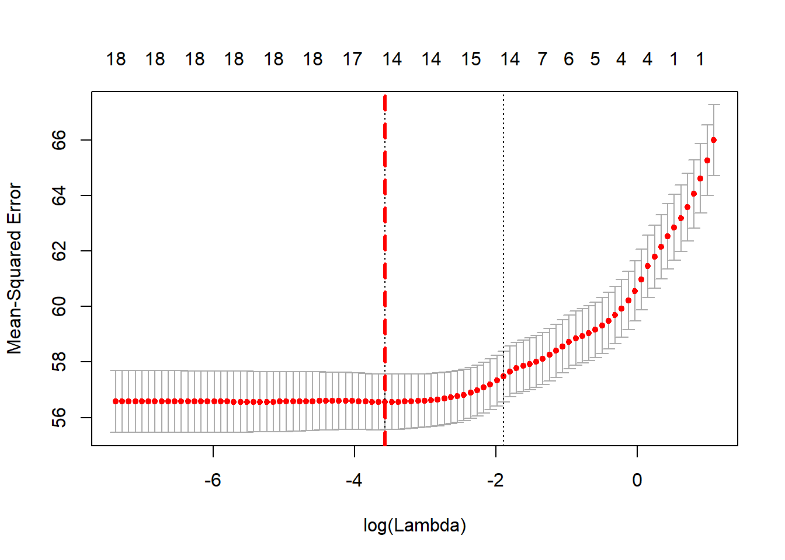
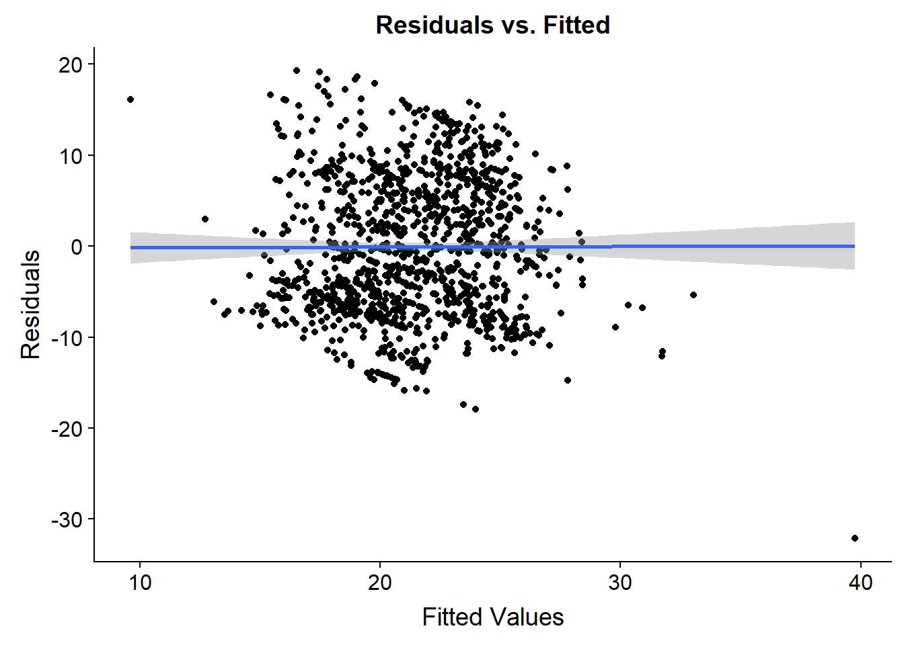

Prediction With Optimal Elastic Net Model
Elastic Net Model
The Machine Learning Algorithm I have chosen is an Elastic Net Regression model. The model is defined by minimizing the term \[\frac{(1-\alpha)}{2}*||\beta||_2^2+\frac{\alpha}{2}*||\beta||_1\]
when, \[||\beta||_2 = \sqrt{\lambda\sum_{j=1}^p\beta_j^2}\]
and, \[||\beta||_1 = \lambda\sum_{j=1}^p |\beta_j|\]
In this case \(\alpha\) determines the amount of weight given to LASSO and Ridge shrinkage penalties, and \(\lambda\) is the tuning parameter which determines the amount of constraint placed on the coefficients of our model. I have chosen this model because it highlights a few important concepts in machine learning:
Cross Validation: This model uses 5-fold cross-validation on the dataset to pick the best (balance between error rate and generalizability) model.
Parameter Tuning This model executes an iterative process to tune the parameters \(\alpha\) and \(\lambda\) in a way that minimizes the mean squared error (MSE).
Simplicity Regression models (especially when they use shrinkage methods such as Elastic Net) are very attractive in their simplicity and interpretability. Although nonparametric models such as GAMS, Random Forrest, and ANN’s can be more effective, regression models are hard to beat in their simplicity and efficacy when the data is linear. In this case our Elastic Net model is good for both predicting, and inference. By analyzing the coefficients’ we can get an idea for how certain features affect the outcome metric. In practice, understanding these effects can lead to actionable measures for performance improvement.
Model Buidling
Data Set up
To begin our analysis we will set up our data to exclude the features we are not interested in using as predictors. Although the main aim of the data is to use only the 16 voice measures to predict the motor and total UPDRS scores, we will include the features age and sex as they may contain valuable information as well. Since our interest is in predicting the motor_UPDRS feature, we will exclude the total_UPDRS from our model as well as the features subject.(subject ID), and test_time.
#Predict Motor UPDRS Score
#Exclude Subject ID, Total Score, and time in trial, from model
data = dataWithSubject[,!(names(dataWithSubject)%in% c("subject.","total_UPDRS","test_time"))]Run Model
Now we will run our data through our ML Algorithm optimumElastic() which takes our data and the desired response variable in as arguments, uses cross validation to determine the optimal tunes of \(\lambda\) as it correspond to its respecitve \(\alpha\) value (over a sequence from \(\alpha = (0.5,0.95)\)), and returns a list of error rates as they relate to each \(\alpha\) value as well as the \(\alpha\) value that yields the lowest error rate. The source code for function optimumElastic() can be found in Appendix 1 in the Source Code tab at the top of this web page.
library(glmnet)
#Determine best Model
set.seed(1234)
pInfoList = optimumElastic(data,"motor_UPDRS")
We can see that the lowest error rate is indicated by the red point in the above plot and corresponds to the best elastic net model for our data. In this case \(\alpha = 0.6\)
Next, we will visualize how the optimal \(\lambda\) was chosen for this model. 
The above plot visualizes how our mean cross validated error rate (MCVE) changes as \(\lambda\) increases. The solid blue line corresponds to the \(\lambda\) value that yields the minimum MCVE, and the dashed line corresponds to the value the is 1 standard error from this minimum value. Generally, anything in this range is a valid selection, however for our prediction model we are interested in the minimum.

Similarly, the above plot shows our error rate as a function of \(\ln(\lambda)\). The dashed red line is value of \(\ln(\lambda)\) that minimizes our error rate, and the dashed black line is the value that falls within 1 standard error of our minimum.
Predictions
Now we are going to use our model to predict motor_UPDRS. We will also look at some diagnostic plots to make sure that the residuals in our model uphold the assumptions of independence, normality and homoscedasticity.
##Make Prediction
yHat =predict(cvElastic,testMat,s = "lambda.min")
The above plot shows the residuals as a function of our fitted values. No trend is observed and the variance of the residuals appear constant. Therefore, our assumptions of independence and homoscedasticity are upheld. Next we will look at our assumption of normality.
We can see in the above Q-Q plot that there may be slight deviations from normality, however, the assumption of normality is relatively flexible, especially in the context of prediction and therefore we can conclude that our model is valid for predictions.
Final Model
We will now look at the coefficient values generated for our final model. Notice that we were able to obtain an MSE of about 57.2 while using fewer predictors than that of a full model. This is one of the benefits of shrinkage models. The chosen features and their corresponding coefficient estimates are seen in the table below
## [1] 57.20176## 20 x 1 sparse Matrix of class "dgCMatrix"
## 1
## (Intercept) 2.060195e+01
## (Intercept) .
## age 1.937349e-01
## sex -4.741096e-01
## Jitter... .
## Jitter.Abs. -2.795386e+04
## Jitter.RAP 6.549085e+01
## Jitter.PPQ5 .
## Jitter.DDP 6.509026e+00
## Shimmer .
## Shimmer.dB. .
## Shimmer.APQ3 -2.207989e+01
## Shimmer.APQ5 .
## Shimmer.APQ11 1.503265e+01
## Shimmer.DDA -3.518396e+00
## NHR -2.598598e+00
## HNR -1.768860e-01
## RPDE 1.935986e+00
## DFA -1.756772e+01
## PPE 1.715806e+01Comparision to a Random Forest
Arguably, Random Forests are the gold standard for quick and dirt prediction models. We will now generate a random forest model with 100 trees and compare the MSE of prediction to that of our elastic net model.
#Calculate MSE of our Random Forest Model
mean((rfPred - testSet$motor_UPDRS)^2)## [1] 11.81427Notice thate our random forest model gives us a smaller MSE prediction rate. Now we will look at how each feature influences our error rate.
#Visualize Variable Importance
varImpPlot(rf, main = "Random Forest VIF Plot")Conclusion
We can see that the MSE of prediction is much smaller when we use a random forest model, however, computation time is also larger, and the model uses all of the predictors. In this case we would need to consult our client to determine wheter or not the sole focus of the model is in prediction (in which case we could continue to tune our random forest model), or if they are interested in a predictive model that is simple and easy to interpret (in which case we we would use our elastic net model).